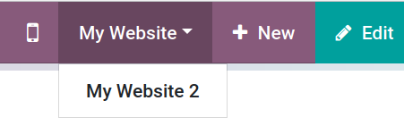
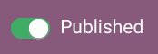

Multi-website in Odoo v12
Joren Van Onder
Table of Contents
The goal of this document is to give a thorough technical understanding of the standard multi-website feature in ≥v12. I will be focusing on v12 in this document, but everything should be applicable to v13 as well.
Website selection
What website to render is determined by get_current_website(). It matches websites based on their domain name and possibly geoip. This is also the function that should be used when you want to determine the website you're on in Python.
Odoo can be forced to load a specific website, regardless of the current domain or geoip via the website selector in the frontend:

You can also do it manually with this GET parameter:
?fw=2
This is set on the session so it will persist as long as the user is logged in. See this for more info on sessions.
Copy-on-write (COW)
Multi-website is implemented in a way that keeps module upgrades and migrations easy. If a bug fix in a view is merged it makes sure that this view change is applied to all websites. It also makes sure that we retain the ability for a user to create a brand new, unmodified website at all times (with e.g. an unmodified Contact Us page).
When naively duplicating views for each website you clutter the
database with a lot of unnecessary records. In most cases Odoo will
use a copy-on-write mechanism. It defers duplicating views until
necessary. Views are created without a website_id and rendered as
usual. When a user modifies a view a website specific copy is created
with the appropriate website_id and the same key. This only
happens for writes that happen via the frontend (not in /web). With
this mechanism bug fixes to non-edited views are applied as usual and
newly created websites will contain all the necessary views. Also this
way we keep the original views without a website_id which can be
used for new websites. The key field mentioned above is used instead
of the XML ID, since multiple records with the same XML ID are not
allowed.
From a technical POV this is mostly implemented in the write of ir.ui.view in the website module, note that it will also handle:
- creating website-specific inherited views if they exist,
- creating website-specific inactive views (used for customize_show_views),
- creating website-specific pages for these views,
On top of this there is a mechanism that duplicates writes during
module updates. It's implemented in _load_records_write(). During a
module upgrade it will duplicate view writes to website-specific
views. This only happens when the field on the website-specific view
was not edited. This means that fixes can be applied to COWed views,
but only in the rare case where the field value being updated does not
differ from the original value. For example: if a view was COWed
because arch_db was updated then no bug fixes to arch_db will be
copied over but bug fixes to access rights still will.
For unlinking a Copy-on-unlink is implemented. Website-specific copies are created when a generic view is deleted from the frontend.
Rendering
When views are rendered filter_duplicate() ensures that for each key
a website specific view is preferred over a generic one if it
exists. Here's an example:
The label in each node corresponds to the key of the view. If a
website_id is configured it's shown between square brackets. The
arrow defines inherit_id, so child views point to their parents.
When website 1 is rendered it will consist of:
- website.layout
- website.layout_logo_show [website 1] (this view can be inactive)
- website.sale_header
- custom.sale_header
A render of website 2 will consist of:
- website.layout
- website.layout_logo_show [website 2] (this view can be inactive)
- website.sale_header
- theme_treehouse.preheader [website 2]
Mixins
Multiple mixins are available to publish models on the website:
website.published.multi.mixin
This inherits both website.published.mixin and website.multi.mixin
and is probably what you want to use in most cases. It allows records
in a model to be published on all or one website. When rendering a
QWeb view on the website make sure to wrap it in website.layout and
set main_object in the rendering context. It should be the main
record you're rendering, the website module will use this record to
make the publish/unpublish feature work:

Unfortunately you need to manually check in your controllers whether or not the record is accessible from the current website. This mixin provides can_access_from_current_website() for that:
from werkzeug.exceptions import NotFound
# ...
if not record.can_access_from_current_website():
raise NotFound()
website.published.mixin
This makes it possible to publish/unpublish your model through website_publish_button(). It only supports publishing your record on all websites. Records using this will also be publishable from the website via the toggle.
website.multi.mixin
In practice this only provides a website_id field and the
can_access_from_current_website() function. Use this if you want to
restrict the visibility of records to one specific website, but you
don't want users to be able to publish/unpublish these records
themselves via the frontend.
Record rule
website is added to the eval context of record rules so you can
easily write record rules that restrict based on the current website:
<record id="my_record_rule" model="ir.rule">
<field name="name">Show only on website 2</field>
<field name="model_id" ref="model_custom_model"/>
<field name="global" eval="True"/>
<field name="domain_force">[("website_id", "=", website.id)]</field>
</record>
Themes
Themes are regular Odoo modules but they are more complex than you
might expect. They have both upstream and downstream dependencies. An
upstream dependency is a module the theme directly or indirectly
depends on. E.g. theme_common, theme_loftspace and theme_beauty
for theme_beauty_sale. Downstream dependencies are modules that
depend on it. As you may have noticed above: themes can depend on
other themes. Themes can activate optional features on the website by
activating website_sale views (e.g. website_sale.categories to
activate eCommerce categories). Themes also have their own
ir.attachment records which contain default images and other themes
that depend on them can modify them. Lastly, themes are often
auto-installed (e.g. theme_*_sale modules when website_sale is
installed).
It leads to complex scenarios. Imagine theme B depends on theme A. The user has installed theme A on website A and theme B on website B. If theme A is uninstalled on website A it cannot be fully removed because it would break website B.
Because of all this complexity themes are handled in a special way. Only relying on COW is too complex so instead data related to themes is stored in template models:
theme.ir.ui.viewtheme.ir.attachmenttheme.website.menutheme.website.page
When themes are installed these template models are converted to their
normal counterparts with _convert_to_base_model(). Each one of these
will have a website_id and a theme_template_id to link them back
to the theme.
You can upgrade a theme on all websites with odoo-bin -u or upgrade
a theme on only one website via the backend by going to the
website's URL.
Sessions
Sessions are based on Werkzeug sessions. When a user visits Odoo a
session cookie is created and stored in their browser. It's a unique
ID that links every requests that browser makes to a session in
Odoo. On the server side the session is persistent and is written to
disk (by default ~/.local/share/Odoo/sessions/). It contains data
different data that needs to persist (e.g. whether or not the user is
logged in). The session files are pickled, if you want to inspect them
you can use:
$ python3 -m pickle ~/.local/share/Odoo/sessions/werkzeug_861d25cb*.sess
Stale sessions are automatically removed. A session is considered stale if it hasn't been modified for one week. The expiration date for the cookie on the browser side is 3 months. This is why after 3 months you need to login again.
Assets
JS and SCSS assets in Odoo are compiled, minimized and combined into
asset bundles. In the case of SCSS it's a necessary step; it needs to
be compiled to CSS for the browser to understand. But this is not the
only reason, reducing the number of files the browser needs to load
also reduces the amount of HTTP requests. On top of that the
minimization reduces the file size which speeds up each HTTP
request. To skip the minimization and bundling you can use
?debug=assets. It's useful when working on the frontend and also
demonstrates how much faster the asset bundling process makes Odoo.
Each bundle is a single file, saved as an ir.attachment record. You
can find them like this:
SELECT id, url FROM ir_attachment WHERE name LIKE '/web/content%' ORDER BY id;
New bundles are defined in templates as regular QWeb templates and called in the appropriate locations as follows:
<t t-call-assets="web.assets_common"...
This leads to _get_asset_nodes() being called which eventually calls get_asset_bundle(). This creates objects that inherit from AssetsBundle (like JavascriptAsset and StylesheetAsset). The unique key of the asset is computed in the checksum property and is a hash of:
- the metadata (filename, type, url, …) of the files it contains, and
- the last time a file in the asset bundle was modified
This causes recompilation of an asset bundle when a file in it changes
or new files are added. This checksum is saved in the URL of the
ir.attachment and looks like this:
/web/content/1002-0d0afe0/web.assets_common.js
1002: their.attachmentID0d0afe0: the first 7 characters of thechecksum
This leads to issues with >1 website, because every website will have
its own assets. To avoid the assets constantly recompiling the
website module adds the website ID to the URL:
/web/content/1012-0d0afe0/2/web.assets_common.0.js
2: the website ID
This allows Odoo to maintain separate compiled asset bundles per website.